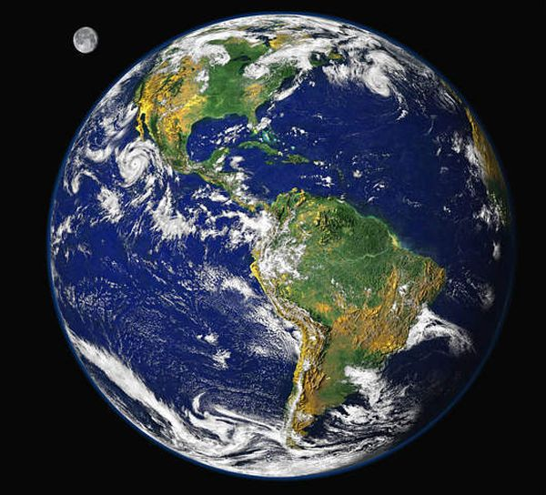

Сунчев систем ОВДЕ
Марс ОВДЕ
Венера ОВДЕ
 Земља је трећа планета по удаљености од Сунца и једина позната планета у свемиру на којој постоји живот. Према радиометријском рачунању и мишљењу да је цео Сунчев систем настао у једном процесу, процењује се да се Земља формирала пре више од 4,5 милијарди година, што је утврђено одређивањем времена полураспада урана и торијума. Време полураспада U238 је 4,51 × 109 година, а Th232 је 1,39 × 1010година.Гравитација Земље међусобно делује са другим објектима у свемиру, посебно са Сунцем и Месецом, јединим природним сателитом Земље, који је почео да кружи око Земље пре 4,53 милијарди година. Гравитационо деловање између Земље и Месеца узрокује океанске плиме и осеке, стабилизује оријентацију Земље око своје осе и постепено успорава исту. Земља је најгушћа планета у Сунчевом систему и највећа од четири терестричке планете. Земља се једном окрене око Сунца у 365,26 дана, период познат као Земљина година. Током овог периода, Земља се окрене око своје осе око 366,26 пута (што је једнако цифри од 365,26 соларних дана). Земљина оса ротације се налази под нагибом од arcsin0,397776995 ≈ 23,439 281 061° = 23° 26′ 21,41182″ (тренутно се смањује константном угаоном брзином од ≈ 0,01305˙° = 47″ по веку). Једна од најважнијих последица овог нагиба је мењање годишњих доба на Земљи. Литосфера Земље је подељена на неколико крутих тектонских плоча које мигрирају на површини током много милиона година. Земља је једина планета Сунчевог система где вода може да опстане у течном стању. Око 71% површине Земље је покривено водом, углавном океанима. Преосталих 29% је копно која чине континенти и острва која имају бројна језера, реке и друге изворе воде који доприносе хидросфери. Већина поларних подручја Земље покривена је ледом, укључујући ледену плочу Антарктика и морски лед Арктика. Унутрашњост Земље је активна са унутрашњим језгром од чврстог гвожђа и течним спољашњим језгром који генерише магнетно поље Земље и конвекциони мантл који покреће тектонске плоче. Магнетско поље заједно са атмосфером, штити од радијације, штетне по жива бића која насељавају планету. Атмосфера такође служи као штит за одбијање мањих метеороида — пролазећи кроз атмосферу, они сагоре пре него што стигну до Земљине површине. Током првих милијарда година историје Земље, живот се појављивао у океанима и почео је да утиче на атмосферу и површину Земље, што доводи до пролиферације аеробних и анаеробних организама. Неки геолошки докази показују да се живот појавио пре 4,1 милијарде година. Од тада, комбинација удаљености Земље од Сунца, физичких особина и геолошке историје омогућила је животу да се развија и напредује. У историји Земље, биодиверзитет је прошао кроз дуготрајна проширења, која су повремено праћена масовним изумирањима. Преко 99% свих врста које су икада живеле на Земљи су изумрле. Процене броја врста на Земљи данас се веома разликују; већина врста нису описана.Преко 7,6 милијарди људи живи на Земљи и зависи од њене биосфере и природних ресурса за свој опстанак. Људи су развили различита друштва и културе; политички, у свету има око 200 суверених држава.
Земља је пета планета по величини у Сунчевом систему. За разлику од неких других планета, Земља није гасовити џин, каква је на пример планета Јупитер, већ је терестричка планета, односно планета која има чврсту површину. Термин терестрички потиче од грчке речи terra што значи земља. У сунчевом систему ако Земљу упоредимо са остале три терестричке планете, Меркуром, Венером и Марсом, она је највећа, са највећом густином, највећом силом гравитације и најјачим магнетским пољем. Генерално, Земља се састоји од атмосфере, биосфере, хидросфере и њене унутрашње грађе испод површине.
Облици земљине површине варирају, разликују се, од места до места. Око 70,8% земљине површине налази се под водом, укључујући и већи део континенталног шелфа. Подводна површина има различите облике, планинске, укључујући и глобални ширећи средњоокеански гребенски систем, као и подморске вулкане, океанске ровове, подморске кањоне, океанске платое и абисалне равни. Преосталих 29,2% земљине површине који нису покривени водом чине планине, пустиње, равнице, платои, и други геоморфолошки облици. Површина планете је од настанка Земље током геолошког времена до данашњих дана у процесу сталног преобликовања и то под утицајем тектонских покрета и ерозије. Облици рељефа настали и мењани утицајем тектонике плоча стално су изложени утицају временских прилика и то падавинама, температурним променама, и хемијским утицајима. Глацијација, ерозија обала (маринска ерозија), настанак коралних гребена и удари великих метеора такође утичу на промену рељефа.
Слично Марсу, релативно мерено у односу на звезде, Земљи је потребно у просеку 23 часа, 56 минута и 4,091 секунди за ротацију око осе (ротациони период или звездани дан) која спаја северни и јужни пол. Земља изврши једну револуцију, или један обилазак орбитом око Сунца за 365,2564 главних звезданих дана а на просечној удаљености од око 150 милиона километара од Сунца. Смер револуције Земље око Сунца је супротан смеру казаљке на сату гледано од севера надоле, односно, смер кретања Земље око Сунца одговара смеру ротације Сунца око своје осе. Померај од 23° 26', који се још назива инклинација, Земљине осе узрокује веће загревање и дуже трајање дана на једној или другој хемисфери током године што изазива цикличне смене годишњих доба. Теорија Милутина Миланковића, Миланковићеви циклуси, показала је и значајније утицаје љуљања Земљине осе, тачније утицаја промене положаја осе ротације на климу. Својим прорачунима он је утврдио међусобну повезаност прецесије, односно револуцију Земљине осе ротације и појаву ледених доба.